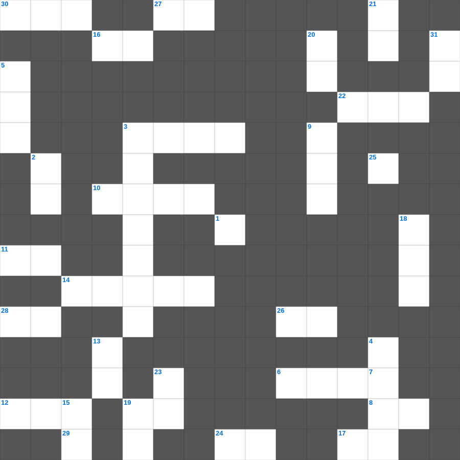

신명기 마스터 100
📌 서비스 정의
십자가로세로는 교회 주보와 주일학교에서 사용할 수 있는 성경 기반 가로세로 퍼즐 서비스입니다. 성경 인물, 사건, 핵심 구절을 바탕으로 제작되었습니다. 온라인 풀이 및 인쇄 기능을 제공합니다.
📖 신명기란?
신명기는 모세가 요단 동편에서 새 세대에게 전한 설교와 율법의 재해석입니다. 출애굽의 기적을 기억하고, 가나안에서 지켜야 할 계명과 축복과 저주를 담고 있으며 총 34장입니다.
📚 신명기의 주요 사건·주제
모세의 마지막 설교 · 쉐마(들으라 이스라엘) 선포 · 축복과 저주의 선언 · 모세의 죽음 · 여호수아 위임
신명기를 주제로 한 신명기 주일학교 퀴즈입니다. 35개의 단어를 맞춰보세요! 가로세로 낱말 퍼즐 형식으로 신명기의 핵심 내용을 재미있게 복습할 수 있습니다.

📝 가로 힌트
1. 히스기야가 십일조와 예물을 쌓아두기 위해 만든 것
3. 이 세상 지혜는 하나님께 이것한 것이니
6. 아브라함이 할례를 받은 나이
8. 하늘에서 불 섞여 내린 일곱 번째 재앙
9. 예수의 옆구리에서 나온 것 두 가지: 피와 이것
10. 범사에 이것하라 이는 그리스도 예수 안에서 너희를 향하신 하나님의 뜻이니라
11. 남편들아 아내 사랑하기를 그리스도께서 이것을 사랑하시고 그 이것을 위하여 자신을 주심 같이 하라
12. 데살로니가 사람들보다 더 너그러워서 간절한 마음으로 말씀을 받고 이것이 그러한가 하여 날마다 성경을 상고한 사람들
14. 베드로전서 2장 11절: 영혼을 거슬러 싸우는 이것을 제어하라
16. 하만이 모르드개를 매달려 했던 나무의 높이를 왕에게 알린 자
17. 씨 뿌리는 비유에서 가시떨기에 떨어졌다는 것은 이생의 이것과 재물과 향락에 기운이 막힌 자
19. 베드로전서 4장 8절: 무엇이 허다한 죄를 덮는가
22. 그런즉 누구든지 그리스도 안에 있으면 새로운 이것이라
24. 무리가 그들의 칼을 쳐서 이것을 만들고 그들의 창을 쳐서 낫을 만들 것이며
25. 죄가 있어 매를 맞고 참으면 무슨 칭찬이 있으리요 그러나 이것을 행함으로 고난을 받고 참으면 이는 하나님 앞에 아름다우니라
26. 바벨론에 있는 교회가 너희에게 문안하고 내 아들 이 사람도 그러하느니라
27. 너희 중에 병든 자가 있느냐 그는 교회의 이것들을 청할 것이요
28. 스바냐가 경고한 '여호와의 날'의 특징 (분노, 환난, 이것의 날)
29. 나는 여호와라 나 외에 다른 이가 없나니 나밖에 이것이 없느니라
30. 다윗의 용사들 중 세 명의 우두머리
📝 세로 힌트
2. 여호와는 나의 이것이시니 내게 부족함이 없으리로다
3. 르호보암이 노인들의 자문 대신 택한 것
4. 출애굽을 이끈 이스라엘의 지도자
5. 재앙이 넘어갔다는 뜻의 절기
7. 주께서 주신 권세는 너희를 무너뜨리려고 하신 것이 아니요 이것 하려 하신 것이니
9. 성막 뜰 입구에 놓인 놋으로 만든 대야
13. 의인의 집에는 많은 보물이 있어도 악인의 소득은 이것이 되느니라
15. 이제는 너희가 하나님을 알 뿐 아니라 더욱이 하나님이 이것 바 되었거늘
18. 우리의 마음과 손을 아울러 하늘에 계신 이것께 들자
19. 끝이 왔도다 이 땅 네 이것의 끝이 왔도다
20. 굽은 갈라졌으나 새김질을 못해 부정한 동물
21. 마지막 나팔에 순식간에 홀연히 다 이것하리니
22. 한 군인이 창으로 옆구리를 찌르니 곧 이것과 물이 나오더라
23. 경건에 형제 우애를, 형제 우애에 이것을 더하라
31. 모든 사람의 끝이 이와 같이 됨이라 산 자는 이것을 그의 마음에 둘지어다
🧩 이 퍼즐에서 배우는 내용
이 퍼즐은 신명기 마스터 100의 핵심 단어와 개념을 자연스럽게 복습할 수 있도록 구성되었습니다. 주일학교 수업이나 개인 성경공부에서 학습 내용을 점검하는 용도로 바로 활용할 수 있습니다.
🧑🏫 교회 교육 자료 활용
이 퍼즐은 주일학교 교재 추천 자료로 활용할 수 있고, 주일학교 주보에 넣기 좋은 분량으로 구성되어 있습니다. 수업용 주일학교 교안에 활동지로 붙이거나, 예배 후 복습용 주일학교 공과교재로 바로 사용할 수 있습니다.
🏷️ 키워드
신명기 주일학교 퀴즈, 신명기, 십자가로세로, 성경퀴즈, 말씀퀴즈, 가로세로퍼즐, 주일학교 교재 추천, 주일학교 주보, 주일학교 교안, 주일학교 공과교재